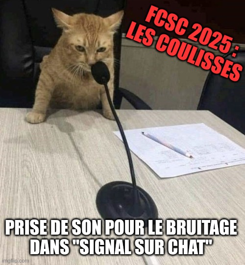

Challenge #564
Signal auf Katze
Direct-Sequence-Spread-Spectrum-Techniken (DSSS) sind großartig. Sie ermöglichen es mehreren Funksystemen, gleichzeitig auf demselben Kanal zu kommunizieren (bekannt als CDMA: Code Division Multiple Access), und sie können auch sehr ungünstigen Signal-Rausch-Verhältnissen standhalten. Zur Veranschaulichung führen wir folgendes Experiment durch: Können Sie das Flag wiederfinden, wenn ich dessen 22 Zeichen gleichzeitig übertrage und zur Erschwerung Katzengeräusche… als Rauschen hinzufüge?
In diesem Experiment kann das Signal-zu-Katzen-Verhältnis jedes Buchstabens bis zu -45 dB erreichen!
Ich habe Gold-Codes (oder Gold-Sequenzen, benannt nach Robert Gold) verwendet. Sie entstehen durch die XOR-Verknüpfung zweier Maximalfolgen (2^n-1), die von zwei LFSRs (Linear Feedback Shift Registers) gleicher Länge (n) erzeugt werden, wobei eine Folge gegenüber der anderen verschoben ist. Die resultierenden Sequenzen zeichnen sich durch eine sehr geringe Kreuzkorrelation aus: perfekt für unser Experiment!
GPS-Satelliten nutzen ebenfalls Gold-Codes zur Signalübertragung, aber Vorsicht, meine sind anders: Beide LFSRs haben eine Länge von 15 Bits und besitzen folgende Generatorpolynome:
G1(x) = x^15 + x^7 + 1
G2(x) = x^15 + x^10 + x^5 + x^4 + 1Die Initialisierungswerte beider Register sind
0x7FFF.
Da die Audiodatei nicht zu lang werden sollte, habe ich die 22 ASCII-Zeichen (8 Bits) des Flags übereinandergelegt, jedes mit seinem eigenen Gold-Code.
Ich wollte die Dinge einfach halten: Das erste Audiosample enthält das erste Bit der Gold-Sequenz usw. (ein Sequenzbit pro Audiosample).
Somit besteht das Audiosignal aus 262.136 Samples, also 8-mal 32.767 (die Anzahl der Bits eines Zeichens multipliziert mit der Länge einer meiner Gold-Sequenzen).
Die Bits des Bytes werden vom höchstwertigen Bit (MSB) zum niederwertigsten Bit (LSB) übertragen.
Um jedes Zeichen des Flags zu finden, müssen Sie die charakteristische Phase des ihm zugewiesenen Gold-Codes verwenden.
Die 22 Phasen (entsprechend der Anzahl an Vorlaufbits von Register
G2 gegenüber Register G1) lauten wie folgt:
4, 7, 8, 24, 27, 31, 39, 42, 43, 49, 53, 54, 59, 62, 65, 73, 93, 99, 118, 119, 120, 128Beispielsweise lauten die ersten Bits der 22. Sequenz (Phase=128):
1, 1, 0, 0, 1, 1, 0, 1, 0, 0, 1, 1, 0, 1, 1, 0, ...Diese Sequenz wird wie folgt transformiert, um mit dem Signal korreliert zu werden:
+0.5, +0.5, -0.5, -0.5, +0.5, +0.5, -0.5, +0.5, -0.5, -0.5, +0.5, +0.5, -0.5, +0.5, +0.5, -0.5, ...Wenn die Sequenz korreliert ist, beträgt das decodierte Bit 0; ist sie antikorreliert, beträgt das decodierte Bit 1.
Theoretisch bringt die Korrelation einer Sequenz der Länge 32767 einen Verarbeitungsgewinn von
10*log10(32767) = 45,2 dB. Wird das ausreichen? Hoffen wir, dass die Katzen nicht zu viel Lärm gemacht haben!

Zu untersuchende Datei:
../files/signal-sur-chat.wav